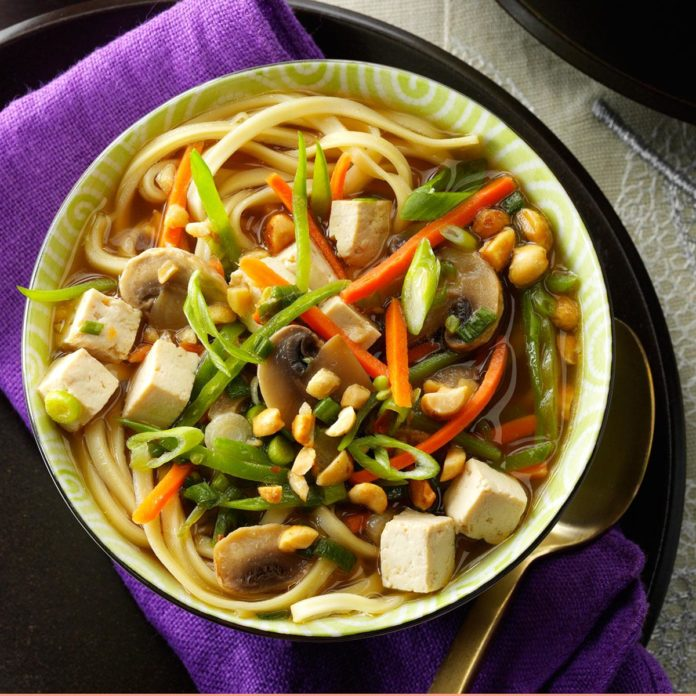

Asian Tofu Noodle Soup

Ingredients
| 1 tablespoon canola oil |
1 tablespoon minced fresh gingerroot |
| 2 garlic cloves, minced |
1/4 teaspoon crushed red pepper flakes, optional |
| 1/2 pound sliced fresh mushrooms |
1 carton (32 ounces) reduced-sodium chicken broth |
| 1/4 cup sherry or reduced-sodium chicken broth |
1/4 cup reduced-sodium soy sauce |
| 7 ounces firm tofu, drained and cut into 1/2-inch cubes |
1 cup fresh snow peas, julienned |
| 1 large carrot, shredded |
2 green onions, thinly sliced |
| 8 ounces uncooked Chinese egg noodles or uncooked spaghetti
|
Finely chopped peanuts and additional green onions, optional |
1. In a large saucepan, heat oil over medium heat. Add ginger, garlic and, if desired, pepper flakes; cook and stir 1 minute or until fragrant.
2. Add mushrooms, broth, sherry and soy sauce; bring to a boil. Cook, uncovered, 5 minutes. Add tofu, snow peas, carrot and green onions. Reduce heat; simmer, uncovered, 4-6 minutes longer or until vegetables are crisp-tender.
3. Meanwhile, cook noodles according to package directions; drain and divide among four bowls. Pour soup over noodles. If desired, sprinkle with peanuts and green onions.
Nutrition Facts
1 serving: 339 calories, 7g fat (1g saturated fat), 0 cholesterol, 1961mg sodium, 49g carbohydrate (6g sugars, 4g fiber), 19g protein.